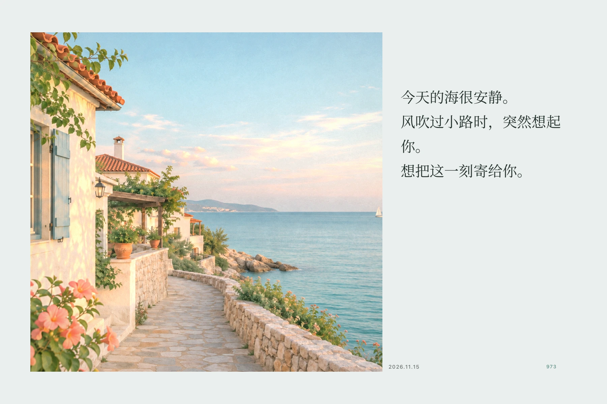
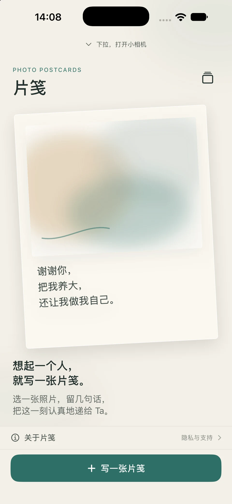
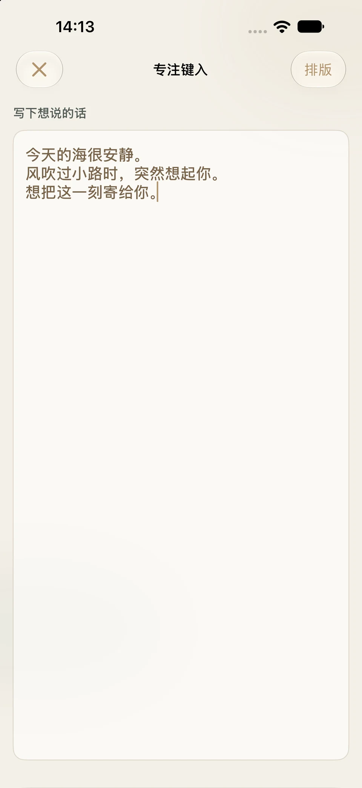
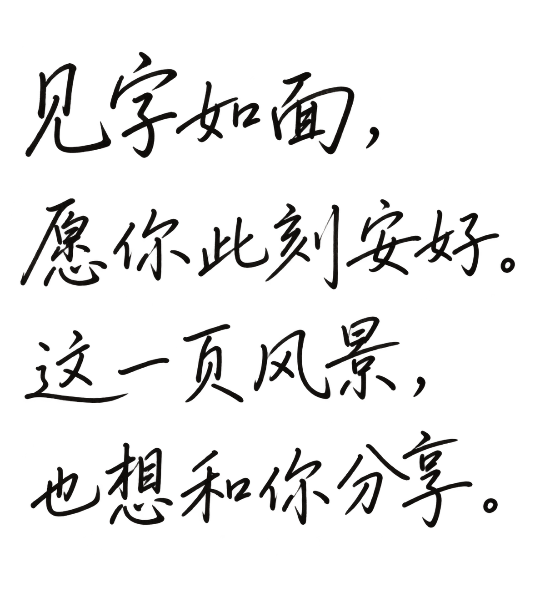
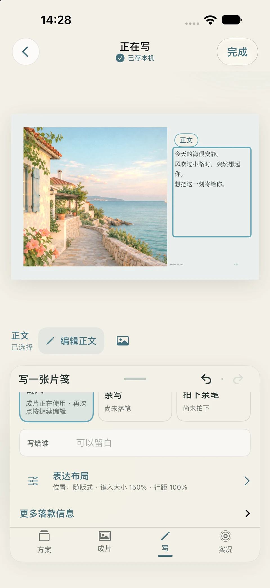
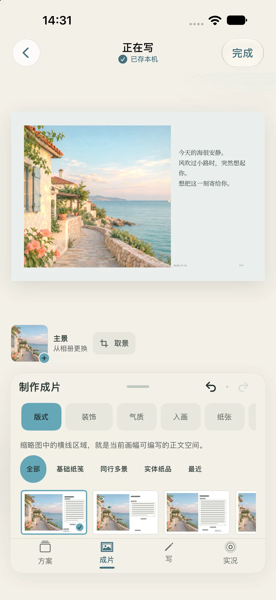
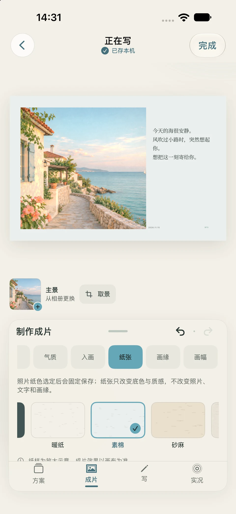
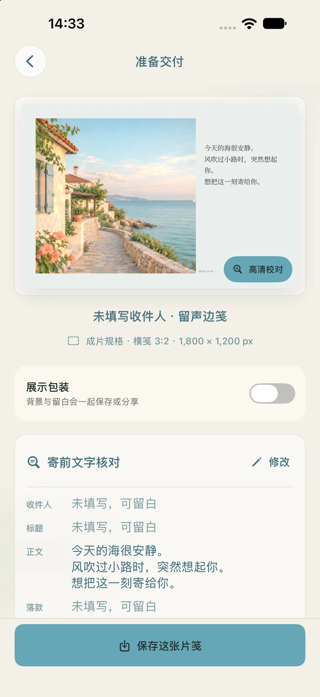
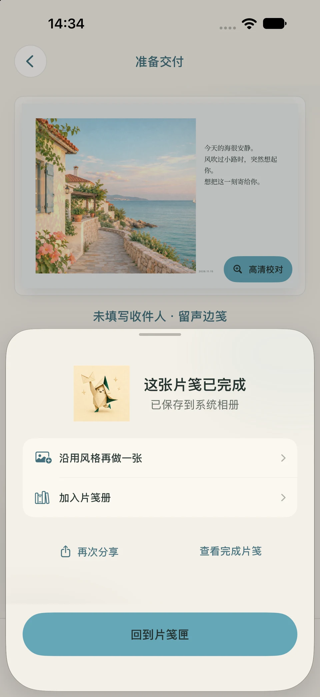

把照片写成一张片笺
从一张照片开始，留几句话，再把成品保存下来。每张步骤图都使用同一案例，红圈标出本步入口；你可以在“写”和“成片”之间来回调整。


1.选一张想分享的照片
打开片笺，点写一张片笺，在系统照片选择器里选中主图。也可以先下载上面的海边示例照片，再回到片笺选择它。
完成后检查：工作台出现你选中的照片。更换照片与调整取景是两个不同入口，原图会保留。


2.写下自己的话
在底部写工具中选择键入，打开正文编辑，写下寄语。写完后返回成片，检查文字有没有遗漏。收件人、标题和落款都可以按需要填写，不必一次填满。
完成后检查：回到成片能看到你的正文；文字较多时，可在“表达布局”中调整字体、字号与位置。


一笔一画，都是你的语气
在“写”工具里选择“亲写”，进入自由亲写画布。用手指落笔，或在支持的 iPad 上使用 Apple Pencil；写完点“写好了”，回到成片检查。也可以用下面这段现成文案练习。
练习文案：见字如面，愿你此刻安好。这一页风景，也想和你分享。
若想直接把现成字图放进作品，可使用“拍下亲笔”的图片导入方式。自由亲写可以参照字稿落笔；切换表达来源后，要检查当前成片与亲笔取景范围。
展开字稿与亲写入口




3.选一个版式
点底部成片，进入版式。本例选择留声边笺，让主图与一段短文并排。你也可以换其他版式，直接比较成片。
完成后检查：检查照片是否被裁掉重要部分。需要时使用主景旁的“取景”微调；缩略图中的横线表示正文空间。


4.挑一张合适的纸
在成片 → 纸张里试选纸色和质感。本例使用素棉，让海蓝、暖墙和深色文字保持清楚。每次选择都可以在上方成片里比较。
完成后检查：纸张改变的是底色与质感。继续检查照片、正文与纸张的搭配，不要只凭放大的纸样决定。


5.校对后再保存
点右上角完成进入准备交付。用高清校对放大检查取景、字的位置和完整性，再核对下方正文。要保存静态照片时，先在“实况”工具中确认选择的是“照片”。
完成后检查：确认内容和交付方式都正确后，再点“保存这张片笺”。若出现解锁提示，先核对当前作品权益与 Apple 确认页。


6.到相册确认成品
首次保存可能出现添加照片的系统询问。按你的意愿允许后，等待片笺显示已保存到系统相册，再到系统照片里查看新副本。
完成后检查：保存成功以系统写入结果为准。检查成品图文完整；取消权限或写入失败时，可以返回检查后重试。



制作时可能遇到的问题
为什么保存时出现解锁提示？
本例作品已有交付权益。首次领取免费交付权益需要联网。请以 App 内当前说明与 Apple 确认页为准；你可以先返回继续编辑。
普通制作会上传照片或寄语吗？
普通照片编辑、书写、草稿和录音在设备上处理。主动分享成品时，内容会交给你选择的接收平台。
保存按钮点过了，为什么相册里没有？
先看是否已经出现“已保存到系统相册”。若仍在准备、权限未允许或保存失败，先按当前提示检查后重试。不要把取消或失败当作已经保存。
图示以 iPhone 界面为例，iPad 的入口位置可能不同，界面以所安装版本为准。示例照片为合成图，截图中的操作区域由独立圈注标明，原始界面未被重绘。普通编辑与校对可先体验，实际交付权益和价格以 App 内及 Apple 确认页为准。